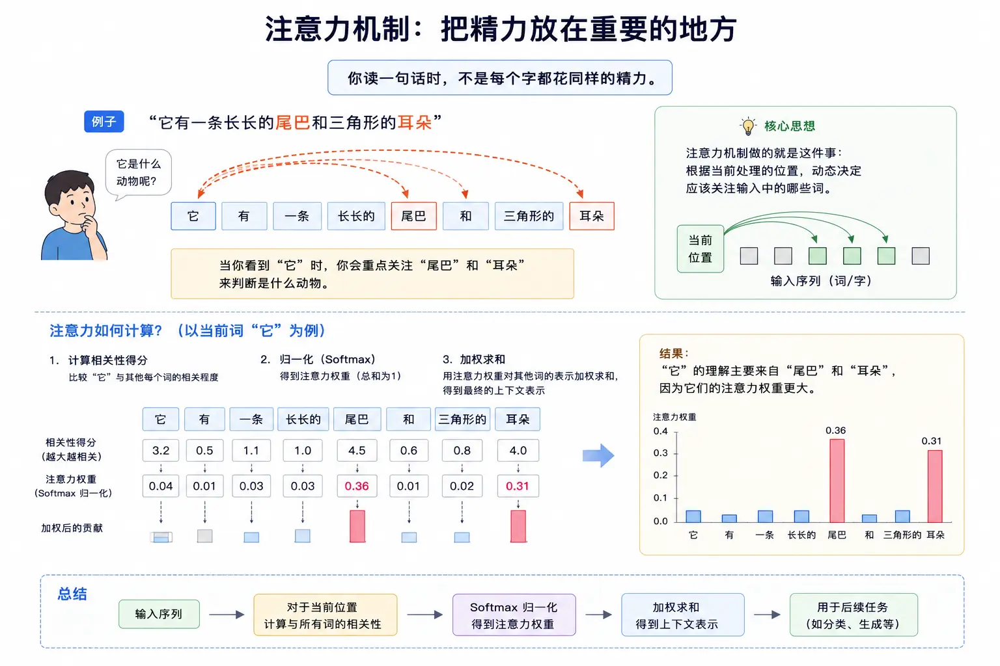

AI 工作原理
你可能会问：我只是想用 AI，为什么要懂它怎么工作？
道理很简单：如果你知道 AI 的能力从何而来，你就能更好地使用它。
你会知道什么时候该信它，什么时候该质疑它。
-
你会知道它擅长什么，不擅长什么。
-
你会知道幻觉从何而来，以及如何减少它的影响。
神经网络的直觉理解
现代 AI 的核心是神经网络，这个名字来自于人脑的神经元结构。
大脑神经元的类比
人脑里有大约 860 亿个神经元，它们互相连接，传递信号，每个神经元接收来自其他神经元的输入，经过处理，再输出给其他神经元，学习的过程，就是调整这些连接强度的过程。
人工神经网络借鉴了这个思路，但做了极大的简化。
三层基本结构
一个典型的神经网络分为三层：输入层、隐藏层、输出层。

我们用识别一张图片是猫还是狗作为例子：

| 层级 | 作用 | 在这个例子中 |
|---|---|---|
| 输入层 | 接收原始数据 | 图片的每个像素、颜色信息 |
| 隐藏层 | 逐层提取特征 | 边缘 → 纹理 → 耳朵、眼睛等器官 |
| 输出层 | 给出最终结果 | "是猫的概率 85%"、"是狗的概率 15%" |
每层有很多神经元，每个神经元接收上一层的输出，做一点简单计算，再传给下一层。
-
第一层可能识别这有一条竖线、这有个圆形。
-
第二层把这些组合起来：竖线加圆形，可能是一只耳朵。
-
第三层继续组合：两只尖耳朵、胡须、猫眼，这很可能是一只猫。
神奇之处在于：这些特征不是人设计的，是模型自己从数据中学到的。
一个最简单的神经元
让我们用几行 Python 代码，展示一个神经元在做什么：
实例
# 一个人工神经元的基本计算逻辑
# 没有复杂数学，只有加权求和 + 激活
# ============================================
def simple_neuron(inputs: list, weights: list, bias: float) -> float:
"""
一个最简单的神经元
inputs: 输入值（来自上一层神经元）
weights: 权重（每个输入的重要程度，训练中学习得到）
bias: 偏置（阈值，训练中学习得到）
"""
# 第一步：加权求和
# 每个输入乘以对应的权重，再加起来
weighted_sum = 0.0
for input_value, weight in zip(inputs, weights):
weighted_sum += input_value * weight
# 加上偏置
weighted_sum += bias
# 第二步：激活函数（让输出非线性）
# 这里用最简单的 ReLU：负数变 0，正数不变
output = max(0.0, weighted_sum)
return output
# 模拟：判断"这是不是猫的耳朵"的一个神经元
# 输入：[尖的程度, 位置高度, 有没有毛]
inputs = [0.8, 0.9, 0.7] # 这三个特征都比较明显
# 权重：训练后学到的（在 runoob 示例中，我们假设这些值已学好）
weights = [0.5, 0.4, 0.3]
# 偏置：阈值
bias = -0.6
result = simple_neuron(inputs, weights, bias)
print(f"神经元输出：{result:.3f}")
print(f"判断：{'可能是猫耳朵' if result > 0 else '不太像'}")
# 输出：神经元输出：0.660
# 输出：判断：可能是猫耳朵
这个神经元做的事情很简单：把输入加权求和，过一个激活函数，输出结果。
但当成千上万个这样的神经元连在一起，每层学习不同的特征，整体就会产生惊人的智能。
记住这个直觉：神经网络 = 很多简单计算单元连接在一起，通过调整连接权重来学习。
训练 vs 推理：两个不同阶段
AI 的生命周期分为两个完全不同的阶段：训练和推理。
理解这两个阶段的区别，能帮你理解很多事情——比如为什么训练那么贵，推理相对便宜。
训练：让 AI 学习
训练是这样一个过程：给模型看大量数据，让它不断调整参数，预测得越来越准。
比如训练一个识别猫狗的模型：
-
1. 准备几百万张已标注的图片（这张是猫，那张是狗）
-
2. 让模型猜"这是什么"，一开始它会猜错很多
-
3. 告诉它"猜错了，应该是猫"，让它调整一下网络里的权重
-
4. 重复几百万次，直到模型预测得越来越准
训练阶段需要巨大的算力和数据。一个大模型可能需要几千张 GPU 训练几个月，花费几百万美元。
推理：让 AI 使用
推理是这样一个过程：用训练好的模型，给新输入，得到输出。
你给 ChatGPT 发一条消息，它回复你——这就是推理。
你用手机拍照识别植物——这也是推理。
推理的特点是：
不需要调整参数，只用训练好的权重做计算。
-
通常只需要一张 GPU 甚至手机芯片就能做。
-
成本比训练低得多。
两者的对比
| 维度 | 训练 | 推理 |
|---|---|---|
| 目标 | 学习知识，调整权重 | 应用已学知识，给出答案 |
| 数据量 | 需要海量数据 | 单次输入即可 |
| 算力需求 | 极高（几千张 GPU） | 较低（单张 GPU 或手机） |
| 成本 | 极高（百万美元级） | 较低（每次几分钱） |
| 频率 | 几次或几十次 | 每秒数百万次 |
| 谁来做 | OpenAI、Anthropic 等公司 | 普通用户或应用 |
打个比方：训练就像"寒窗苦读十年书"，推理就像"上考场做题"。
读书需要很多时间和精力，但一旦学会了，做题就快了。
当你使用 ChatGPT 时，你在做"推理"——模型不会因为你的对话而"学习"或"变聪明"。它的知识截止于训练完成的那一刻。
Transformer 架构简介
2017 年，Google 发表了一篇论文《Attention Is All You Need》，提出了 Transformer 架构。
这篇论文改变了整个 AI 领域。今天的大语言模型，几乎都是基于 Transformer 的。
为什么 Transformer 如此重要
在 Transformer 之前，处理序列数据（比如句子）用的是 RNN 或 LSTM。
它们的问题是：只能一个字一个字地处理，很难捕捉长距离的关联。
比如这句话："我把钱包落在了北京的咖啡馆里，第二天回去找，____ 还在。"——横线处填"它"，你知道"它"指"钱包"，因为你记住了前面的内容。
旧模型处理"还在"时，可能已经忘了"钱包"的存在。
Transformer 的突破在于：它能同时看到整个句子，并且通过注意力机制，知道该关注哪些词。
Encoder 和 Decoder
一个完整的 Transformer 分为两部分：
| 组件 | 作用 | 典型应用场景 |
|---|---|---|
| Encoder（编码器） | 理解输入，把文字变成向量表示 | 文本分类、情感分析、语义搜索 |
| Decoder（解码器） | 根据理解，生成输出文本 | 写作、翻译、对话生成 |
有些模型只用 Encoder（比如 BERT），有些只用 Decoder（比如 GPT），有些两者都用（比如 T5）。
GPT 系列、Claude、Llama 都是"仅 Decoder"的架构——它们的强项是生成流畅的文本。
注意力机制是什么
注意力是 Transformer 的核心，也是它能处理长文本的关键。
类比：人阅读时的注意力
你读一句话时，不是每个字都花同样的精力。
比如："它有一条长长的尾巴和三角形的耳朵"——当你看到"它"时，你会重点关注"尾巴"和"耳朵"来判断是什么动物。
注意力机制做的就是这件事：根据当前处理的位置，动态决定应该关注输入中的哪些词。

动画演示：
每一步只做一件事：根据前文，猜下一个字
注意力是如何计算的
简单说，每个词会生成三个向量：
-
Query（查询）：我在找什么信息？
-
Key（键）：我包含什么信息？
-
Value（值）：我的实际内容是什么？
计算每个位置的 Query 和所有位置的 Key 的相似度，得到注意力权重，然后用这些权重对 Value 加权求和，就得到了这个位置的输出。
不需要记住细节，只要记住这个直觉：注意力 = 给句子中的每个词分配一个权重，表示它对当前位置的重要性。
为什么注意力如此重要
注意力带来了几个关键优势：
-
第一，能捕捉长距离依赖。不管两个词隔多远，只要它们相关，注意力就能连起来。
-
第二，可并行计算。不用像 RNN 那样一个字一个字地处理，可以同时处理整个句子。
-
第三，一定的可解释性。你可以看注意力权重，知道模型在看什么。
比如翻译"它有一条长长的尾巴"时，你可以看到模型翻译"它"时，注意力主要放在"尾巴"上。
预训练与微调
今天的大模型通常采用两阶段训练：预训练 + 微调。
预训练：在海量数据上学习通识
预训练是这样的：找互联网上的大量文本（维基百科、书籍、网页、代码等），让模型做一件事——预测下一个词。
你输入"今天天气真"，让它猜下一个词是什么。
-
你输入"1 + 1 = "，让它猜下一个词是什么。
这个过程没有特定任务，就是让模型广泛学习语言、知识、逻辑、代码等。
预训练是最花钱的部分：数据多、算力大、时间长。
微调：针对特定任务优化
预训练后的模型虽然很博学，但不一定听话。
你问它问题，它可能继续说个不停，而不是直接回答。
你让它写代码，它可能写了一半开始写别的。
微调就是用高质量的对话数据，进一步训练模型，让它学会：
-
理解指令，按要求输出
-
保持对话风格，拒绝有害请求
-
输出更安全、更有用的内容
-
微调的数据量比预训练小得多，但质量要求更高。
用一个类比理解
-
预训练就像读书万卷——从小学到大学，广泛学习各种知识。
-
微调就像职业培训——毕业后去公司上班，学习怎么和同事沟通、怎么写邮件、怎么完成工作任务。
预训练让模型有知识，微调让模型好用。
这也是为什么同样是大模型，有些聪明但难用，有些一般但好用——区别往往在微调。
AI 为什么会幻觉
幻觉（Hallucination）是 AI 最著名的问题之一：它会一本正经地编造不存在的事实、人名、论文、数据。
从概率预测的角度理解
要理解幻觉，先回到 AI 最本质的工作方式：
它不是在查证事实，而是在预测下一个最可能出现的词。
你问：谁发明了电话？——它知道亚历山大·格雷厄姆·贝尔这个序列最可能出现。
但你问：谁发明了 runoob 教程？——训练数据里可能没有这个信息，但它会根据统计规律，编造一个听起来合理的名字。
它不知道自己不知道——它只知道在这个位置，这几个词出现的概率最高。
幻觉产生的常见原因
| 原因 | 解释 | 例子 |
|---|---|---|
| 训练数据不足 | 这个话题在训练数据里很少，模型没学好 | 问一个非常小众的专业问题 |
| 知识截止 | 训练数据截止后发生的事，模型不知道 | 问"2025 年发生了什么"（假设模型是 2024 年训练的） |
| 混淆来源 | 把多个来源的信息混在一起，拼错了 | "张三写了论文 A"（其实是李四写的，但张三和李四常一起出现） |
| 过拟合 | 训练时记住了噪声，当成了事实 | 编造不存在的引用 |
如何减少幻觉的影响
作为用户，你可以这样做：
-
第一，关键信息要核实。涉及医疗、法律、投资、新闻事实等，一定要去查证。
-
第二，让模型提供来源。问它"这个信息的出处是什么？"、"你能给我引用来源吗？"
-
第三，用检索增强生成（RAG）。把自己的文档喂给模型，让它基于这些文档回答，而不是瞎编。
-
第四，用多个模型交叉验证。同一个问题问几个模型，如果它们说的都一样，可信度更高。
记住：AI 说的话，听起来再像真的，也可能是编的。对高风险决策，永远保持怀疑。

点我分享笔记